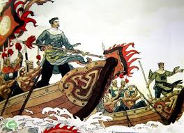
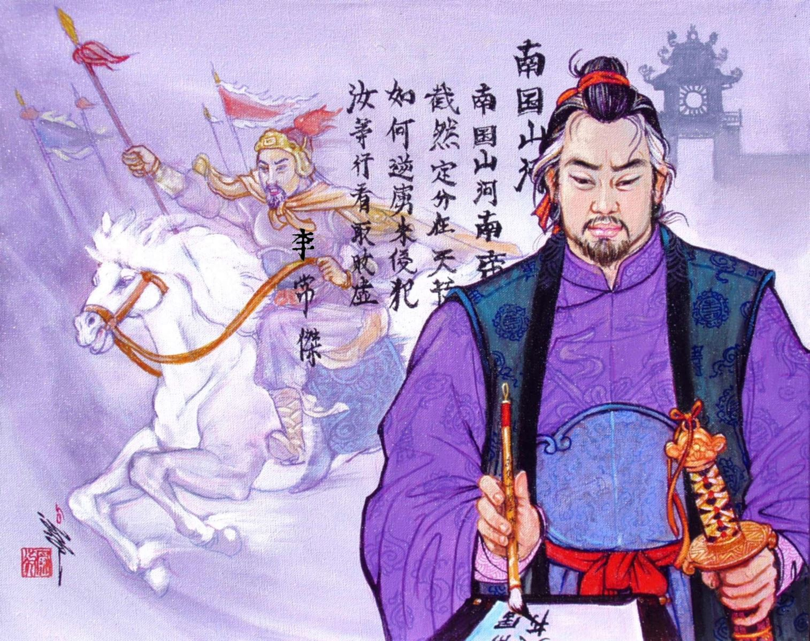

Ông họ Lý, tên Thường Kiệt, người phường Thái Hòa, ở bên phải kinh thành Thăng Long. Cha ông là An Ngữ, làm quan đến chức Sùng ban Lang tướng, đời đời trâm hốt. Ông là người nhiều mưu lược, có tài tướng súy, từ lúc ít tuổi đã lừng danh và phong tư tuấn nhã, được sung vào làm chức Hoàng môn Chi hầu, đến đời Lý Thái Tông được phong làm Nội thị Sảnh đô tri. Thánh Tông phong làm Hiệu úy Thái bảo. Ông giữ chức một cách cung cẩn, mọi việc làm đều tuân theo lễ pháp, không sai sót chút gì. Vua ban cho ông tiết việt đi kinh lý việc quan, việc dân hai quận Thanh Hoa, Nghệ An và năm huyện, ba nguồn các dân Man, Lạo, nếu ai trái mệnh thì được phép trấn áp ngay.

Duy nước Chiêm Thành trễ nải việc triều cống, nhà vua thân chinh đi dẹp. Ông vâng mệnh lĩnh chức Đại tướng, sung làm Tiên phong, bắt được chúa Chiêm là Chế Củ. Do công lao, ông được phong làm Phụ quốc Thái phó, lại nhận chức Chử trấn tiết độ, Đồng trung thư môn hạ, Thượng trụ quốc, Thiên tử nghĩa đệ, Phụ quốc Đại tướng quân, Khai quốc công.
Nhân Tông lên ngôi, được phong làm Thái úy, giữ chức đại thần, sự anh minh vũ dũng thực là rực rỡ. Ông vừa nghe tin người Tống muốn đem binh mã nhòm ngó nước ta để gây chiến tranh, bèn lập tức tâu vua rằng:
- Ngồi đợi kẻ địch đến, sao bằng đánh trước để bẻ gãy mũi nhọn của nó.
*

Vua bèn sai ông thống lĩnh đại binh, phá được giặc ở các thành Ung Khâm, Liêm, khắc phục được ba châu, bốn trại, bắt được tù binh, thu được của cải không biết bao nhiêu mà kể. Năm Long Phù thứ nhất (1101), vua trao cho ông chức Nội thị phán sảnh đô áp vệ, Hành điện nội ngoại đô tri sự. Mùa đông, ông đẹp yên giặc Lý Giác ở Diễn Châu. Nhà Tống sang đánh báo thù vây hãm các châu Lục, Lược. Ông ra sức đắp thành ở sông Như Nguyệt, lấy lại được Vũ Bình Nguyên. Quân ta thắng lợi trở về, nhà vua lại khen thương lớn. Đến khi ông mất, nhà vua truy tặng chức Nhập nội điện tri hiệu kiểm, Thái úy, Bình chương quân quốc trọng sự, Việt quốc công, cấp thực ấp một vạn hộ và cho em là Thường Hiến được nối tước phong hầu.
Những kẻ chuộng những truyện quỷ thần, đồng cốt để lừa dối người khác đều bị Thái úy trừng phạt rất nặng, quá nửa đều bị sa thải, thói tục dơ bẩn được rửa sạch. Cho nên thời ấy đền thờ nhảm đều được biến thành nơi thờ phúc thần. Nhân dân chịu ơn của ông nhiều, tâu xin lập đền thờ [1], hễ có cầu đảo điều gì đều hiển ứng.
Năm Trùng Hưng thứ nhất (1285), sắc phong làm Trung phụ công. Năm Trùng Hưng thứ tư (1288), tặng thêm hai chữ “dũng mãnh”. Năm Hưng Long thứ 21 (1313), gia phong hai chữ “Uy thắng”. Đền thờ tôn nghiêm ngày càng linh ứng.
Chú thích:
[1] Đền thờ chính ở xã Ngọ Xá, huyện Vĩnh Lộc, Thanh Hóa.